Codex 实战案例库
按“案例总览、16 个主案例、怎么选择、成熟度、扩展案例”的方式组织。结构对齐成熟教程站，内容保持原创，并继续保留你的国内站和中转入口。
主案例总览
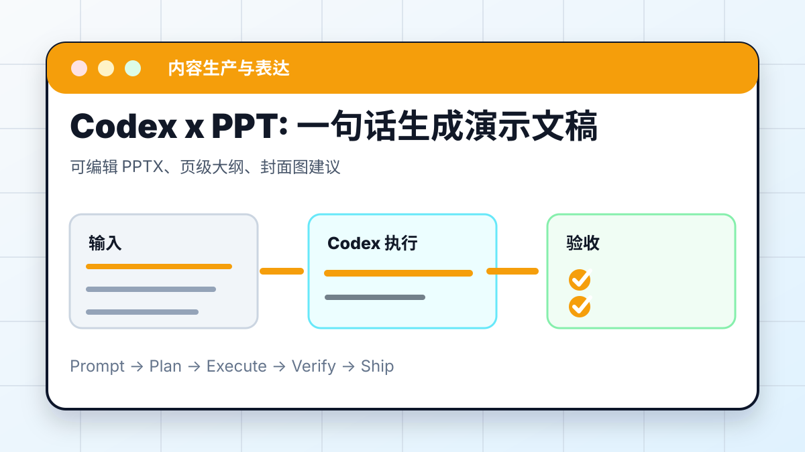
PPT Skill：一句话生成演示文稿
用 Skill 生成 PPT 初稿。PPTX 能打开，文字不溢出。
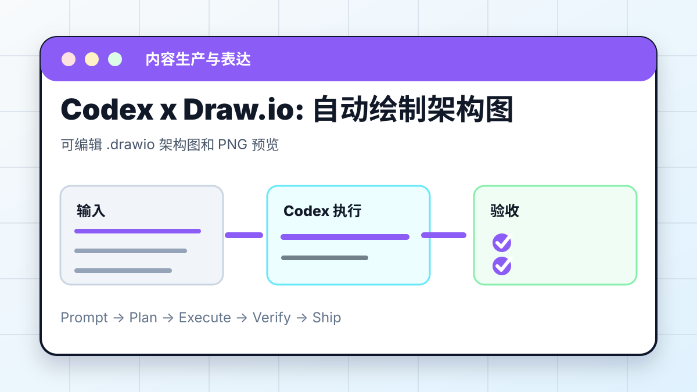
Draw.io：AI 自动绘制架构图
把系统说明变成可编辑架构图。源文件可编辑，连线方向正确。
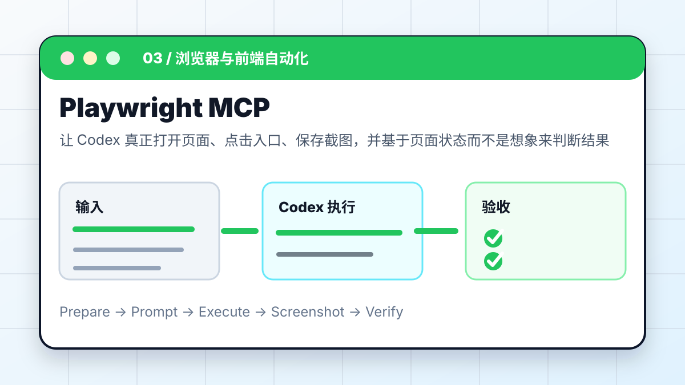
Playwright MCP：让 AI 操控浏览器
打开网页、点击入口、截图检查。截图存在，链接和控制台检查通过。
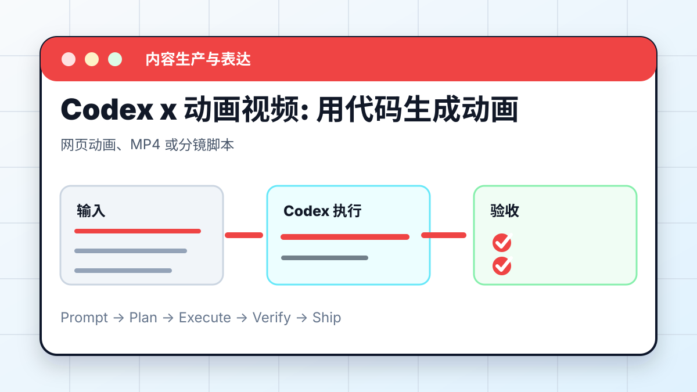
动画视频：用代码生成动画
把讲稿变成分镜和视频工程。字幕不遮挡，时长和画幅正确。
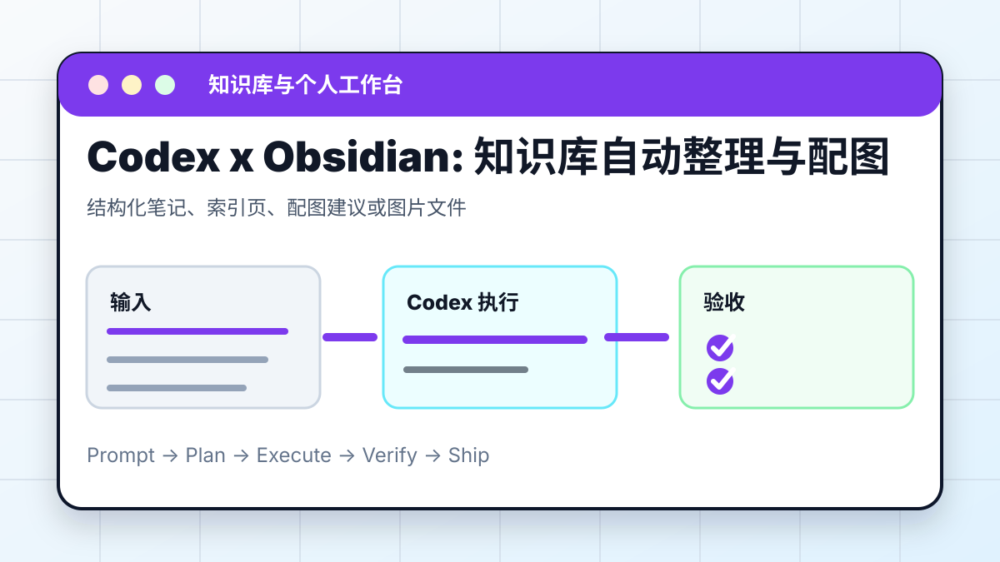
Obsidian：知识库自动整理与配图
整理 Vault、建立索引、补配图。原文保留，索引和图片路径可用。
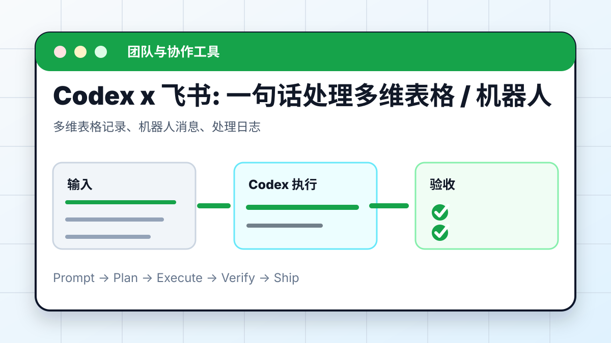
飞书：一句话处理多维表格
读取表格、统计数据、生成通知。字段不误删，写入前确认。
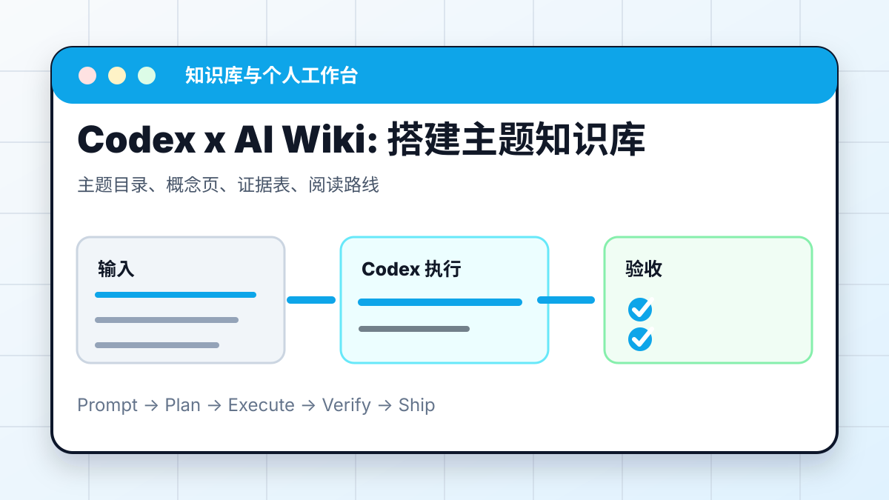
AI Wiki：搭建主题知识库
把资料组织成概念页和证据表。结论能追到来源。
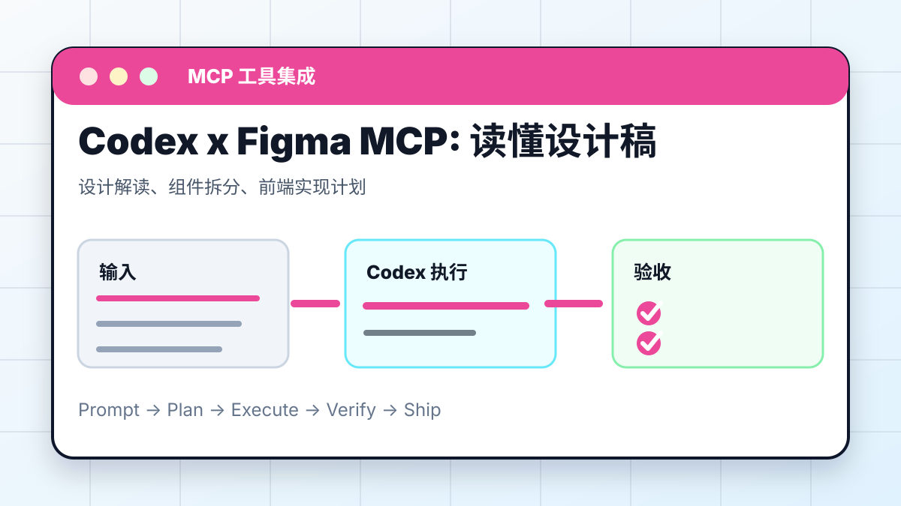
Figma MCP：读懂设计稿
读取设计稿并拆成前端实现计划。颜色、字号、组件层级可复核。
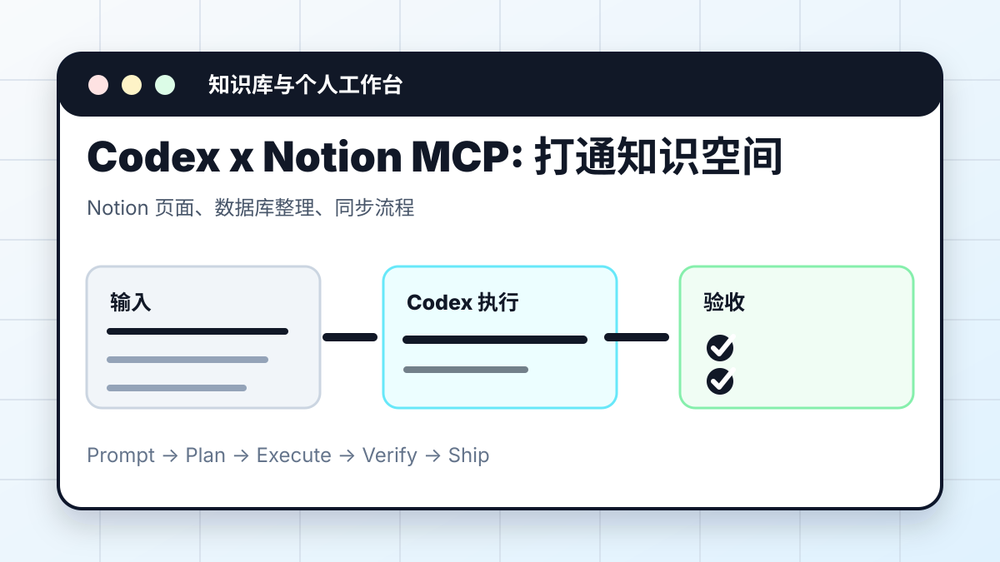
Notion MCP：打通知识空间
整理 Notion 页面和数据库。写操作前列变更清单。
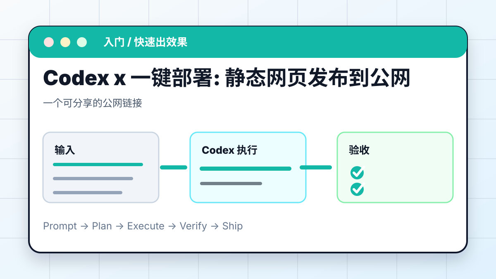
静态部署：网页一键发布到公网
把本地网页部署为可分享链接。公网 200，资源路径正确。
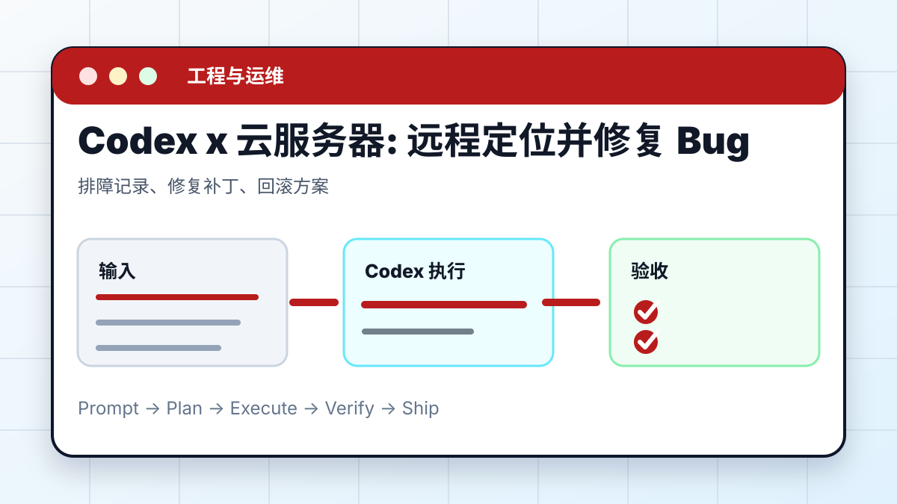
云服务器：远程定位并修复 Bug
读日志、复现、最小修复、回滚。不泄露密钥，有回滚方案。
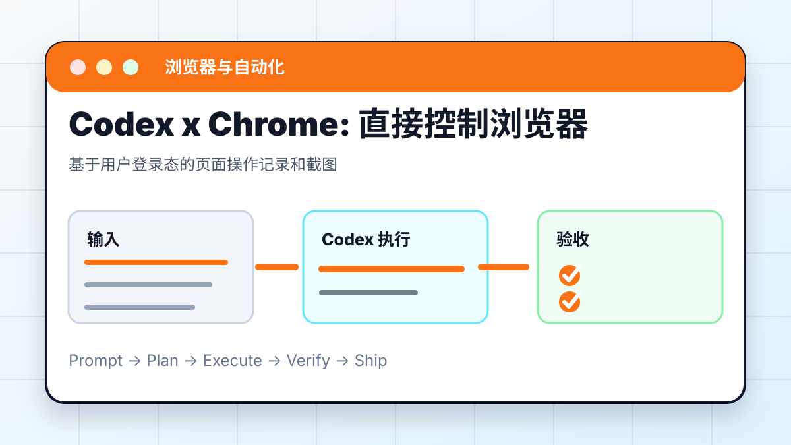
Chrome：让 AI 直接控制浏览器
使用用户登录态做网页检查。不触发删除、发布、支付。
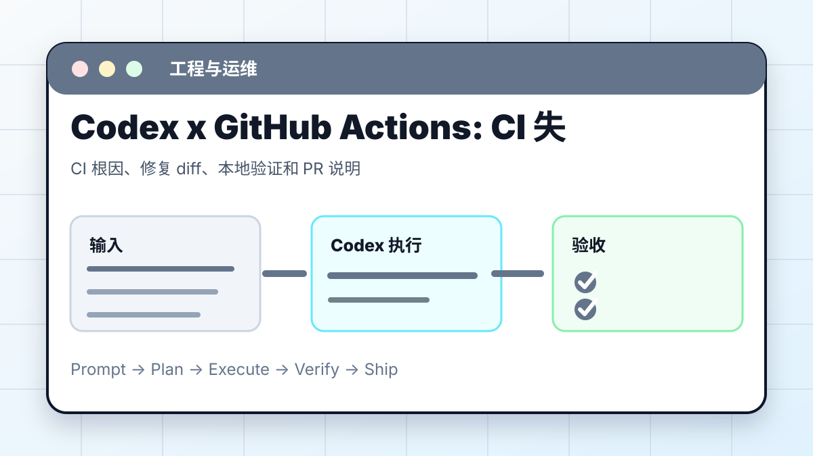
GitHub Actions：CI 失败自动修复
读取失败日志并让 CI 回绿。本地复现，远端 CI 通过。
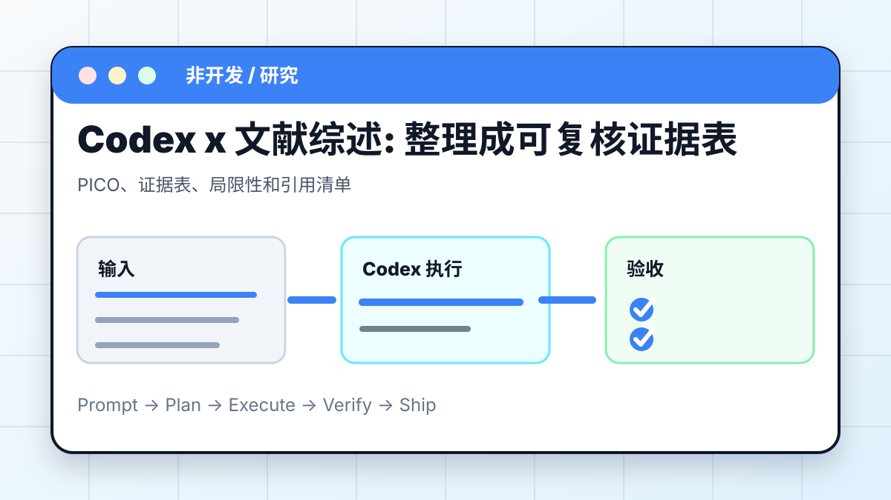
文献综述：整理成可复核证据表
把研究问题拆成 PICO 和证据表。每条结论有来源和局限性。
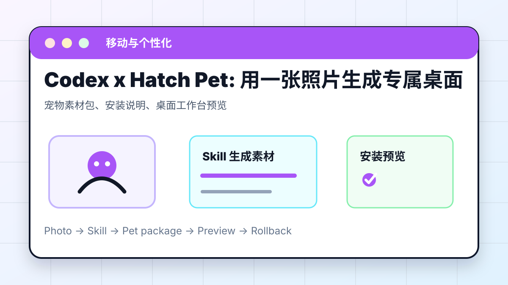
Hatch Pet：用一张照片生成专属宠物
生成并安装 Codex 桌面宠物。素材包路径和回退方式明确。
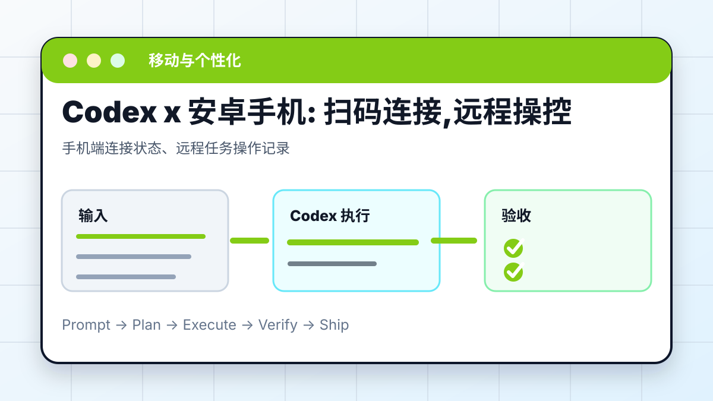
安卓手机：扫码连接，远程操控
手机端跟进桌面 Codex 任务。账号一致，连接状态正常。
推荐入口与验证重点
| 编号 | 案例 | 核心场景 | 推荐入口 | 验证重点 |
|---|---|---|---|---|
| 01 | Codex x PPT Skill：一句话生成演示文稿 | 用 Skill 生成 PPT 初稿 | App / CLI / PPTX | PPTX 能打开，文字不溢出 |
| 02 | Codex x Draw.io：AI 自动绘制架构图 | 把系统说明变成可编辑架构图 | Draw.io / diagrams.net | 源文件可编辑，连线方向正确 |
| 03 | Codex x Playwright MCP：让 AI 操控浏览器 | 打开网页、点击入口、截图检查 | MCP / Browser | 截图存在，链接和控制台检查通过 |
| 04 | Codex x 动画视频：用代码生成动画 | 把讲稿变成分镜和视频工程 | 网页动画 / MP4 | 字幕不遮挡，时长和画幅正确 |
| 05 | Codex x Obsidian：知识库自动整理与配图 | 整理 Vault、建立索引、补配图 | Obsidian / Markdown | 原文保留，索引和图片路径可用 |
| 06 | Codex x 飞书：一句话处理多维表格 | 读取表格、统计数据、生成通知 | 飞书 / Base | 字段不误删，写入前确认 |
| 07 | Codex x AI Wiki：搭建主题知识库 | 把资料组织成概念页和证据表 | Obsidian / Wiki | 结论能追到来源 |
| 08 | Codex x Figma MCP：读懂设计稿 | 读取设计稿并拆成前端实现计划 | Figma MCP | 颜色、字号、组件层级可复核 |
| 09 | Codex x Notion MCP：打通知识空间 | 整理 Notion 页面和数据库 | Notion MCP | 写操作前列变更清单 |
| 10 | Codex x 静态部署：网页一键发布到公网 | 把本地网页部署为可分享链接 | GitHub Pages / Vercel | 公网 200，资源路径正确 |
| 11 | Codex x 云服务器：远程定位并修复 Bug | 读日志、复现、最小修复、回滚 | SSH / 服务器 | 不泄露密钥，有回滚方案 |
| 12 | Codex x Chrome：让 AI 直接控制浏览器 | 使用用户登录态做网页检查 | Chrome / 登录态 | 不触发删除、发布、支付 |
| 13 | Codex x GitHub Actions：CI 失败自动修复 | 读取失败日志并让 CI 回绿 | GitHub Actions | 本地复现，远端 CI 通过 |
| 14 | Codex x 文献综述：整理成可复核证据表 | 把研究问题拆成 PICO 和证据表 | PDF / DOI / Evidence | 每条结论有来源和局限性 |
| 15 | Codex x Hatch Pet：用一张照片生成专属宠物 | 生成并安装 Codex 桌面宠物 | Skill / App | 素材包路径和回退方式明确 |
| 16 | Codex x 安卓手机：扫码连接，远程操控 | 手机端跟进桌面 Codex 任务 | ChatGPT App / Desktop | 账号一致，连接状态正常 |
案例成熟度
已形成完整流程
PPT、Playwright、Obsidian、飞书、文献综述、Hatch Pet、安卓远程、远程修 Bug、GitHub Actions。
偏工具接入教程
Draw.io、Figma、Notion、静态部署、Chrome 控制。重点在授权、典型任务和安全边界。
扩展补充
README、数据可视化、数据库、GitHub、采集、公众号、真实仓库、巡检、调研。